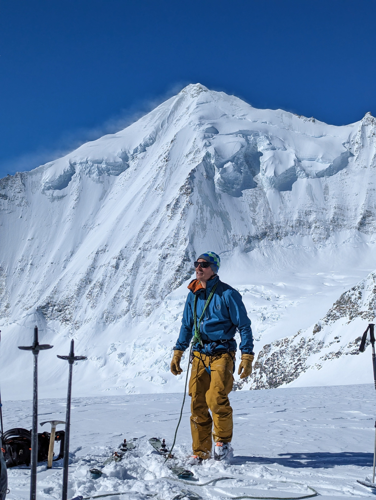

Blog > Haute Route Impériale 2023
Über Ostern waren wir auf der unglaublich tollen Haute Route Impériale. Hier sind einige Tagesberichte und ein Interview mit der Küche und dem Bergführer.
Gute Morgenstimmung bei tiefen Minustemperaturen vor der Tracuit-Hütte.
Am Vorabend der Tour sind wir in St-Luc angereist und haben uns im Gîte de Prilet eingerichtet. Wir haben dann im Grand Hôtel Chalêt Favre zu Abend gegessen. Miriam hatte eine Alpine Bowl, Chrigle Tartar und Polenta, und Jonathan und Oliver einen Burger. Das Essen war sehr gut, nur mussten wir uns im Restaurantskill Nr 1 üben, nämlich Geduld. Es sei bemerkt, dass wir aus Performancegründen auf ein Raclettabend im Gîte de Prilet verzichtet haben.
Wir haben gemütlich Zmorgen gegessen. Dann sind wir zur Talstation Tignousa gegangen und haben Aaron getroffen. Nach einer kurzen Begrüssung sind wir mit einer Bahn und steilen Tellerliften unter Führung von Chrigl zum Bela Tola gelangt. Wir fuhren zu einem Sattel hinunter und die Sicht war leider schlecht. Wir haben dann zum ersten Mal aufgefellt und sind zum Borterpass gekommen.
Dann kam die erste grosse Abfahrt bis ins Turtmanntal. Die Sicht war mässig doch die Stimmung magisch. Wir haben dann wieder aufgefellt und sind zum Stausee aufgestiegen. Dort haben wir Lunch gemacht. Aaron fand ein Nuggi. Und dann gings weiter mit dem Aufstieg. Vielleicht wegen der feuchten Seeluft bekamen Jonathan und Oliver ziemliche Stollen and den Fellen. Angekommen in der Turtmannhütte wurden wir von der Hüttenhexe Brigitte gut bewirtschaftet und kamen in den Genuss von Spaghetti al Tonno.
Wir haben nicht zu schlecht geschlafen in der Turmann-Hütte. Frühstück gut. Dann wurden wir begrüsst von einer spritzigen Abfahrt in der Dunkelheit (Wir hatten Stirnlampen, weil der Mond war bereits untergegangen). Wir sind um 6:00 Uhr gestartet. Dann kam eine lange Strecke im Schatten, und es ging gut und wir waren schnell. Wir konnten unsere eigene Spur legen im frischen Schnee von gestern auf dem Gletscher.
Plötzlich war es sonnig und warm (es war wunderschön). Wir haben auch eine kleine Pause gemacht und wir haben uns angeseilt. Dann kam eine steile Zigzag zwischen Gletscherspalten und Serak. Mit den Harscheisen mussten wir dann über blankes Eis gehen. Und dann waren wir beim Pass beim Brunegghorn. Wir standen unter dem Bishorn, Weisshorn, und haben das Matterhorn und die ganze Spaghettikette gesehen.
Dann gings zum Skidepot. Dort hat uns der Bergführer zum ersten mal die Steigeisen angelegt. Wir gingen aufs Brunegghorn (nach kurzem Umweg) und wir hatten eine wunderschöne Aussicht. Zurück zum Skidepot und dann eine herrliche Abfahrt im frischen, unberührten und fluffigem Pulverschnee. Kleine Mittagspause in der Sonne auf dem Turtmanngletscher. Nach den letzten Höhenmetern wurden wir begrüssen von die schöne Tracuit-Hütte.
Gut geschlafen in einem 4er Zimmer in der Tracuit-Hütte. Frühstück 6:00 Uhr. Und dann gings los und wir sind gegen den Strom geschwommen und nicht aufs Bishorn. Bei einem kalten Aufstieg und nach einer sehr kalten Pause haben wir uns angeseilt. Aaron, der Bergführer, hat uns durch die Spalten navigiert. Und es gab insbesondere eine grosse Spalte, die wir über eine kleine Brücke überquert haben. Und dann wollte Christoph Jonathans Leben riskieren; er hat genau so angehalten, dass Jonathan auf der Spalte stehen bleiben musste.
Und dann sind wir zum Punkt 3809 m. ü. M. auf dem Turtmanngletschär unterhalb vom Bishorn und vom Weisshorn gekommen. Und wir hatten eine atemberaubende Aussicht. Und es war schon KALT. Miriam hat fast ihre Zehen verloren, und dann kam der fun part. Einige Skis waren zuerst langsam, aber wir konnten alle eine schöne Abfahrt geniessen. Es gab gar keine Spuren und es war wie auf einer Wolke skifahren. Jede Kurve hat dich in die nächste Kurve geworfen.
Dann gab es eine Snack- und Aufwärmpause in der Tracuit-Hütte. Auf einer Quasi-Skipiste fuhren wir runter, fellten auf, und gingen zum Col du Milon. Picknick mit spektakulärem Panorama, dann Abseilen. Nach dem letzten heissen Aufstieg gab es eine Sulzabfahrt zur Hütte. Hier gabs eine feine Rösti und ein kaltes Getränk und wir freuen uns aufs Abendessen. Was für eine Aussicht!
Wir haben alle gut geschlafen im Zimmer Milon auf der Arpitettaz-Hütte. Nach Frühstück und schrecklichen Klo Besuchen, haben wir eine kurze aber harte Abfahrt gemacht. Dann sind wir den Moming-Gletscher hochgefellt. Wir hatten Harscheisen, dann nicht, dann wieder. Wir waren zuerst im Schatten und gingen unterhalb von Seraks nach rechts. Um 8:40 Uhr kamen wir in die Sonne, nachdem wir zwischen Gletscherspalten und dem steilen Fels nach oben gingen.
Dann kam das flache Plateau mit einem wunderschönen Gletscherbruch zu unserer Linken und Seraks und unberührten Abfahrtshängen zu unserer Rechten. Nach einer kurzen Pause gings hoch nach rechts, wo wir drei Zeitreisenden begegnet sind. Sie haben ausgesehen wie Skifahrer aus den 80er-Jahren und haben richtig gut gewedelt. Dann musste Oliver auf Klo zwischen riesigen Spalten und Christoph hat das sogar noch fotografiert! Auf dem Moming-Gletscher war es einfach so schön!
So erreichten wir den Dom und von dort gings auf den Blanc de Moming. Die Aussicht über die Couronne Impériale war fürstlich. Tolle Aussicht. Zurück zum Dom, feines Sandwich von der Arpitettaz-Hütte gegessen, und dann kam der Umfall. Miriam's Ski war angeknagst. Trotzdem gings weiter und wir starteten auf die Arrête du Blanc. Wir hatten 45 Minuten. Ja, es war krass. Dann sind wir angekommen und nach einer intensiven Ideenfindungsphase haben Aaron und Christoph wie Astronauten M's Ski verstärkt.
Dann sind wir zwischen Gletscherspalten auf wunderschönem Schnee wie Astronauten über den Firn geglitten. Für einmal war der Gletscher der Horizont. Eine letzte Traverse durch steile Moränen brachte uns zur Mountet-Hütte.
Miriam, Aaron, Oliver haben mega gut geschlafen. Jonathan on par mit den anderen Nächten. Es gab Ostereier zum Frühstück. Das führte trotz Schneegestöber draussen zu ersten Oster Gefühlen. Nach dem Frühstück sind wir den steilen Hang zum Gletscher runtergefahren. War noch geil. Anfangs war die Sicht noch gut und wir sahen bis zum Col Durant hoch.
Als wir den Gletscher hoch liefen, wurden wir plötzlich von einer Wolke überrollt und sahen kurz nichts mehr. Wir gingen trotzdem weiter und es ging rechts vom Bruch des Glacier Durant hoch. Es war etwas steil. Nach der Steilstufe haben wir uns dann angeseilt. Es gab viel Pulverschnee, einige Spalten und alles war weiss. Dann gings flach Aaron nach (er hat gesagt in der Spur bleiben) und dann vor der Steilstufe des Col Durant haben wir uns wieder losgeseilt.
Das Wetter wurde schlechter und ziemlich stürmisch. Zum Glück hatten wir Rückenwind. Es hat uns fast weggewindet. Auf dem Col angekommen haben wir schnell umgerüstet und dann war Chrigl Aaron's Anker bei der Abfahrt durch die Spalten. Das Runterfahren in der Spur von Aaron war etwas wie eine Bobfahrt. In einem steilen Hang erreichten wir einen grossen Fels. Es war windstill und Aaron konnte sich von Chrigl losseilen, weil die Sicht allmählich besser wurde. Dafür wurde leider der Schnee mit abnehmender Höhe auch etwas schlechter.
Wir fuhren dann eine lange Bobbahn hinunter und fühlten uns wie Presslufthammer auf dem harten und schlagigen Schnee. Eine logische Linie führte leitete uns über Schnee- und Felsbänder auf die Moräne hinunter. Wir fanden einen ersten Baum, den alle fotografierten, eine Strasse, und schliesslich ein Stauwerk.
Nach einem kurzen Fussmarsch auf einer Strasse kamen wir zu einer Skipiste, die uns hinunter nach Zermatt führte. Beim Spaziergang durch Zermatt fragte uns ein Tourist, ob wir wissen, wo das Matterhorn wäre und zeigte dabei auf seine Toblerone Packung. Nur leider lag der Berg komplett in Wolken...
Zum Abschluss haben wir im Bahnhof Bistro unsere Hände endlich gewaschen und eine Pizza verschlungen.
Danke Aaron, für die schöne Tour. Du hast das super gemacht!
Interview mit der Daniel, Hüttenwart der Arpitettaz-Hütte.
Wie viele Helikopter-Rotationen gibt es?
Anfangs Saison machen wir 3 Rotationen mit je 680 kg. Das reicht dann für die ganze Saison. Pro Rotation zahlen wir CHF 300.
Woher kommt das Wasser?
Im Sommer machen wir Warmwasser mit Sonnenenergie. Es gibt einen grossen Tank den wir im Sommer mit Wasserfüllen und der dann für den ganze Winter reicht. Hochpumpen muss man das Wasser aus dem Tank von Hand (darum hat Daniel so viele Muskeln).
Wird der Menüplan zwischen den Hütten (Tracuit, Grand Mountet) abgesprochen?
Nein.
Kennt ihr denn die Nummern der anderen Hütten nicht?
Doch, aber es wäre zu kompliziert. Und wir bieten ja auch Fondue an...
Wie viele Rösti habt ihr heute gemacht?
Etwa 29 bis 30.
Was bist du von Beruf?
Ich bin Lehrer für schwererziehbare Kinder und mein Kollege ist Zimmermann.
Kennt ihr die Touren rund um die Hütte?
Ja, zum Beispiel Tête de Milon, Blanc de Moming, und im Sommer das Zinalrothorn.
Wie lange seid ihr hier?
Wir sind insgesamt 10 Tage hier als Hüttenwarte.
Wie sind die Bedingungen zum Touren?
Jetzt super, doch im Februar hatte es erst ab 2600 m Schnee. Die letzten drei Jahre hatte es immer wenig Schnee.
Was ist dein Lieblingsdessert?
Tiramisu.
Interview mit der Aaron Coulin. Er ist ein super Bergführer! https://www.aaroncoulin.ch/.
Süss oder salzig?
Salzig.
Beach oder mountain?
Mountain.
Sportklettern oder Skitouren?
Sportklettern.
Sulz oder Pulverschnee?
Sulz.